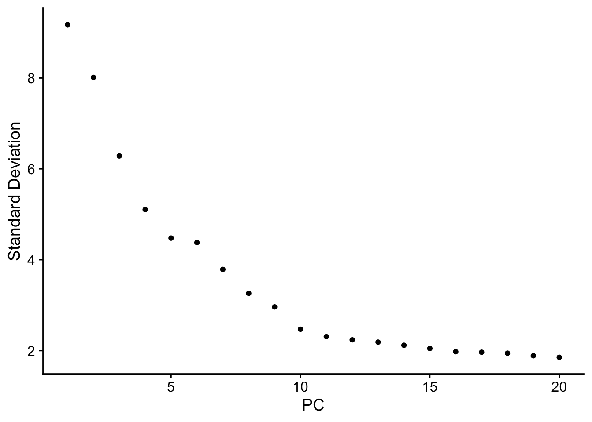

Chapter 4 Integration
Load RData
Load the RData which contain all files from previous chapter.
load("data/intermediate_data/chapter3.RData")1. To integrate or not to integrate?
The goal of integration is to find corresponding cell states across conditions (or experiments). We want to identify cell types which are present in all samples/conditions/modalities within our dataset. We expect to observe a representation of cells from samples/conditions/modalities in every cluster.
We first look at how cells cluster without integration to determine whether integration is necessary. Integration is considered if cells cluster separately on samples, conditions, modalities, etc.
# Run the standard workflow for visualization
filtered.rna <- RunUMAP(filtered.rna, dims = 1:15)
DimPlot(filtered.rna, group.by = "Sample_Name")
Judging on the UMAP, do the two samples need to be integrated?
The same cell types from the two samples are not aligned. We can perform integration.
2. Perform integration
First, we select the features for the integration. The features should be selected in each dataset.
# split the dataset into a list of two seurat objects (activated and naive)
split.filtered.rna <- SplitObject(filtered.rna, split.by = "Sample_Name")
# normalize and identify variable features for each dataset independently
split.filtered.rna <- lapply(X = split.filtered.rna, FUN = function(x) {
x <- NormalizeData(x)
x <- FindVariableFeatures(x, selection.method = "vst", nfeatures = 2000)
})
# Select the most variable features to use for integration
integ.features <- SelectIntegrationFeatures(object.list = split.filtered.rna,
nfeatures = 2000) Next, we perform the integration across samples. This step can take a while to run.
anchors <- FindIntegrationAnchors(object.list = split.filtered.rna,
anchor.features = integ.features)Finally, we can integrate across samples. By default, normalization.method is set to LogNormalize.
integrate.filtered.rna <- IntegrateData(anchorset = anchors)3. Visualize in UMAP
After integration, we look at the integrated data with UMAP. To calculate UMAP, we need to first calculate PCA and select top PCs.
Methods to select top PCs were used a lot more often when the data was normalized with LogNormalize.
Elbow plot can help to select top PCs. The PC number where the elbow is is used to calculate UMAP.
ElbowPlot(integrate.filtered.rna)
integrate.filtered.rna <- RunUMAP(integrate.filtered.rna,
reduction = "pca",
dims = 1:10)
integrate.filtered.rna <- FindNeighbors(integrate.filtered.rna,
reduction = "pca",
dims = 1:10)
# Plot UMAP
DimPlot(integrate.filtered.rna, group.by = "Sample_Name") 
Change the number of PCs and see how the UMAP changes.
You can change the PC numbers by dims argument in RunUMAP.
Dimplot has many arguments to control the plots.
- Search
Dimplotin the “Help” section and read the documentation. - Change
group.bytosplit.by. What is the difference?
When we compare the similarity between the naive and activated clusters in the below plot with what we see using the integrated dataset, it is clear that this dataset benefited from the integration.
4. Save
Save the files into RData for documentation.
# save(integrate.filtered.rna, expMat, file = "data/intermediate_data/chapter4.RData")